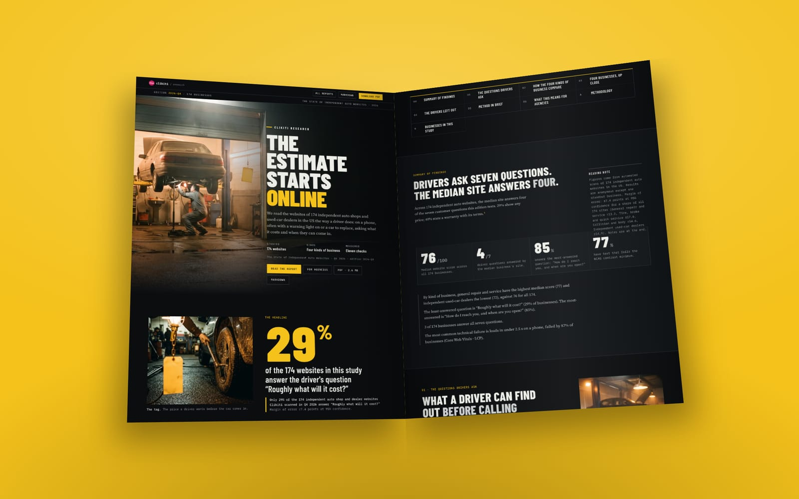
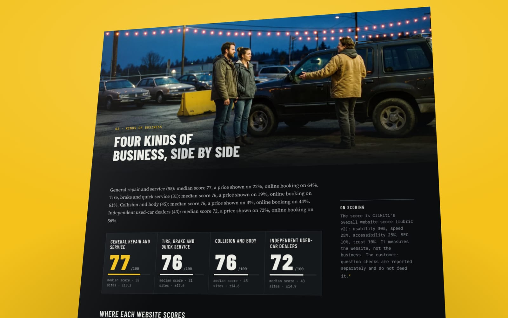

Talk track: getting an independent repair shop to put its prices online
71% of the 174 independent auto websites we scanned show no price at all. This is the conversation with the shop owner: the opener, the pushback you will hear, the numbers that answer it and what to deliver.
- Only 29% of 174 independent auto shop and used-car dealer websites show any price: a service, a fee, a labour rate or a car (Clikiti Research, October 2026).
- A shop doesn't have to quote a job it hasn't seen: a diagnostic fee or a labour rate is enough to answer the question.
- Pair the price with the warranty (60% don't state one with terms) and the shop's qualifications (53% name none), so the price comes with the reason for it.

This is a talk track for one conversation: asking the owner of an independent repair or tire shop to publish prices. It is written for the person across the bench from the owner, and it uses only the numbers in The State of Independent Auto Websites 2026, our scan of 174 independent repair, tire, collision and used-car websites.
The number to carry in: 71% of the sites show no price at all. No service price, no fee, no labour rate, no car with a price on it.
of the 174 websites we scanned answer “Roughly what will it cost?” (a price shown: a service, a fee, a labour rate or a car).
Why price and not warranty#
The warranty gap is also wide. 60% of the sites don't state a warranty with its terms, and the report rates that a quick fix, where prices are rated a content job. Warranty is the easier yes.
Price is the stronger conversation, for three reasons in the data. It is the least-answered of the seven questions in the study. It is the report's headline, so it is the number the owner is most likely to see quoted back. And the best site in the study, Joey's Auto Shop in Des Moines, answers every other customer question and still shows no price. That tells the owner this is the gap even good shops leave.
The warranty comes into the talk track anyway, as the answer to the hardest objection.
Before the call#
Open the shop's site on a phone and look for a dollar amount next to something named: a diagnostic fee, a labour rate, an oil change, an alignment. That is the whole test.
Three things look like prices and don't count:
- a coupon or "save $20 on brakes";
- a monthly payment figure;
- a "free estimate" with no fee anywhere else.
Note what is there instead. If the site has a services page that lists jobs with no amounts, that page is where the prices go, and you can say so.
What to say first#
Open with the driver's question, then the number. The report's own pitch line works as written:
The first question a driver has is what it will cost. Your site makes them call to ask.
Then: "We looked at 174 independent shops and lots. 71% don't show a single price. I'm not asking you to quote jobs on the website. I'm asking for the numbers you already give everyone at the counter."
Stop there and let the owner answer. The objections come next, and they are predictable.
The common objections, and what answers them#
These are the objections shop owners commonly raise about publishing prices. They aren't quotes from anyone we spoke to. Each answer leans on what the study counts as a pass.
"Every car is different"
The most common one, and it is true for the repair itself. The study doesn't ask for that. A site passes when it shows a dollar price for a named service, a fee or a labour rate. A diagnostic fee is the same for every car that comes in. So is the hourly labour rate. Neither commits the shop to a total.
"The shop down the road will undercut me"
This is where the warranty comes in. A price on its own invites a comparison on price. A price next to a warranty with terms, and the shop's qualifications by name, invites a comparison on what the money buys.
Most shops can win that comparison without trying, because 60% of the sites don't state a warranty with its terms and 53% name no qualification: no ASE, no AAA Approved, no parts-network programme. The report's line for the warranty fits here: "You guarantee your work. The site never says so, so the cheaper shop down the road looks the same as you."
"Customers will hold me to it"
Publish starting prices for standard jobs and fixed fees, not totals: an oil change with a "from" price, and the diagnostic fee with a line saying it is credited to the repair if the customer goes ahead. Both are prices a shop already stands by. The study checks whether a price is shown. It doesn't judge any shop's prices.
"People call anyway"
They do, and the sites already make that easy: 85% of them have a phone number that can be tapped and opening hours stated. That is the best-answered question in the study. Contact isn't what separates this shop from the others. Price is, because only 29% answer it.
"I already have a specials page"
Discounts, savings and monthly payments don't count as a price in the study, and for a driver they don't answer the question either. Twenty dollars off brakes says nothing about what brakes cost. Keep the specials and add the price they are taken off.
"The best shops don't do it either"
Partly true, and useful. Joey's Auto Shop answers every other question in the study and passes every speed and accessibility check, with no price on the site. The good shops have done the rest of the work. Price is the one left, which makes it the cheapest way for this shop to get ahead of them.
What to deliver#
One short prices block, built on the shop's existing services page, and the same facts repeated where a driver looks for them:
- Fixed fees: the diagnostic fee and the labour rate, with what the diagnostic fee covers.
- Starting prices for three to five standard jobs. The report's fix names an oil change, brakes and an alignment. Add tyre fitting for a tire shop.
- The warranty with its terms, months and miles, on the home page and the services page.
- Qualifications by name: ASE, AAA Approved, the parts-network programme, whichever the shop holds.
- A date the prices were last checked, so the owner has a reason to keep them current.
If the site has no AutoRepair structured data (51% of the sites don't), add it while you're in there. It is a small technical job and a fair second line on the invoice.
How long it takes#
The report rates prices as a content job and the warranty and qualifications as quick fixes. Most of the time goes on getting the numbers out of the owner, not on the page.
Send one sheet with five blanks: the diagnostic fee, the labour rate, starting prices for the standard jobs, the warranty terms and the certifications held. Once it comes back, the block is an afternoon of writing and layout on the template the shop already has. This is a content change, not a redesign.
The talk track on one card
- Open with the driver's question. "The first question a driver has is what it will cost. Your site makes them call to ask." Then the number: 71% of 174 sites show no price.
- Ask for the fees, not the quotes. A diagnostic fee and a labour rate are the same for every customer, and either one answers the question.
- Answer "I'll get undercut" with the warranty. 60% of the sites don't state one with terms. A price next to a guarantee competes on what the money buys.
You already charge every customer the same diagnostic fee. Put it on the site.
For the other three kinds of auto business, the opening question changes: body shops and used-car lots sell differently, and our comparison of the four kinds shows where each one's site is weakest. The full numbers and the method are in the report.

Keep reading
More on automotive and the same problems in other industries

Repair shop, tire shop, body shop, car lot: where their websites part ways

The intake worksheet: nine questions to ask a wedding venue owner on the first call

Take the class first: a field-visit playbook for pitching an independent gym
How to cite
Clikiti Research (2026, October 15). Talk track: getting an independent repair shop to put its prices online. Clikiti. https://clikiti.com/research/posts/auto-repair-shop-prices-talk-track
Data and license
Every number comes from The State of Independent Auto Websites 2026 (n = 174). Free to reuse under CC BY 4.0. Credit Clikiti with a link. Plain Markdown
About the images
People in the photographs on this page are AI-generated. No real person, school, firm or practice is shown. Last updated Oct 15, 2026.
One stat. One pitch. Every Tuesday.
A finding from our scans, what it means for the agencies selling to that industry, and the line to open a pitch with. Free.